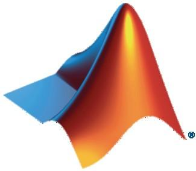

Signal Intelligence Challenge 2024
The Story
This year, an interdimensional rift has opened up right over the Communications Engineering Lab at KIT. And it seems at the other side of the rift, there is a dimension quite close to ours with a different intitute researching communication engineering. Help us receive, decode and decrypt their signals so we can learn how similar this dimension actually is and maybe we can learn something about their customs and their research. So help us doing some spontaneous sociology research and @RR#Listen to the rift!#isic
SDR Workshop
This year, before officially starting the challenge, we have a workshop by Mathworks that will teach students how to use Matlab to receive and process live signal with software defined radios. We hope this will empower more students to participate in the challenge and give everyone a chance to get comfortable with some tools. Your tools of choice during the challenge are not limited and we are excited to be able to provide you with instructions for a tool that the organizers might not be totally familiar with :).
{kind=link}
For best use of time, make sure that you have the current Matlab version (with communication toolbox) installed.
The workshop will start on the 30.10.2024 at 3 pm at CEL (Seminarraum 2.OG). Please register here.
Orga
Time frame: 30.10.2024 - 28.11.2024 (submission closes on 27.11.2024 23:59)
Frequency: 863-870 MHz
Mathworks workshop: 30.10.2024 at 15:00 at CEL (Seminarraum 2.OG). Please register here.
Kick-off Event: 30.10.2024, 18:00 at CEL (Seminarraum 2.OG)
Registration is open through the duration of the challenge
For participation, you need teams of 2 to 4 students. Knowledge of communication engineering and cryptography is helpful.
The Kick-off Event is intended to form teams, so you don't need to do that beforehand!
We rent out SDR-dongles (for free) for the duration of the challenge
Communication & Handing in results
During the competition, to communicate with other participants and the organizers you can use our Matrix room. Also keep an eye since hints or additional challenges might appear there. Results of challenges to hand in have the prefix "@RR#" and the postfix "#isic".
The system to hand in solutions is our CTF system. You can monitor your team's progress there. We will show off how to create teams in the kick-off event.
Rules
Rules are identical to last year, we will notify participants before the challenge starts is changes occur.
Global rankings of groups will be posted in even intervals during the challenge.
Problems tend to consist of multiple levels, so it is worth it to analyse them in detail!
Not all problems are send over the air, mind other hints, for example on our webpage or the in the matrix group!
Handing in false solutions does not result in point-deduction. However, obvious brute-force-attacks will result in your team being disqualified!
Each problem solution (secret) will award your team with 100 points.
The fastest teams gain bonus points.
The team collecting most points during the challenge wins. In case of a tie, we will hold a quiz concerning topics of the challenge until a winner is found.
The jury can provide hints to find the signals. This information might reduce the amount of points given for the solution of this problem.
Prize ceremony
The prize ceremony is held in the context of the yearly Thanksgiving Event of the IEEE Student Branch Karlsruhe on November 28, starting at 19:00 at CEL. Every contestant is invited to this free of charge event, there is no registration necessary.
Additionally to the prize ceremony, there will be an interesting presentation! Exact details on the topic will follow shortly before the event.
Links
Examples and explanations to some example problems of 2022: https://doi.org/10.5281/zenodo.8163122
GNU Radio + SDR Tutorials: http://gnuradio.org
Ettus Knowledge Base: http://www.ettus.com/kb/detail/software-defined-radio-usrp-and-gnu-radio-tutorial-set
sehenswerter Kurzfilm über FM und AM: http://hackaday.com/2013/09/24/retrotechtacular-fundamentals-of-am-and-fm-radio-communication/
kurze Grundlagen zu den verschiedenen Modulationsarten uvm.: http://www.radio-electronics.com/info/rf-technology-design/
MIT open course ware (eine komplette Vorlesung zu digital communications): http://ocw.mit.edu/courses/electrical-engineering-and-computer-science/6-02-introduction-to-eecs-ii-digital-communication-systems-fall-2012/readings/
Inspectrum (visualisieren von aufgezeichneten Signalen): https://github.com/miek/inspectrum